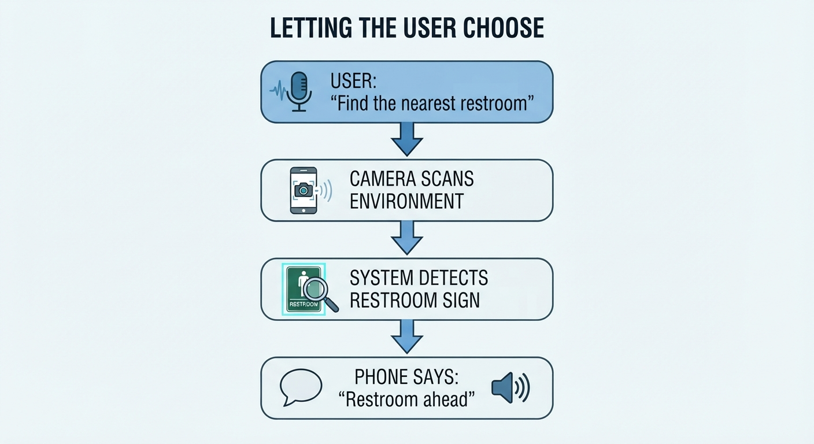
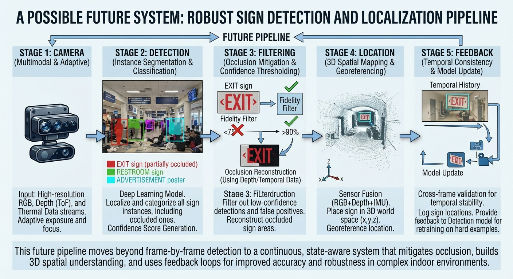

LISTEN TO THIS PAGE
Future Improvements for Mobile Sign Detection
Listen to possible improvements involving small signs, occlusion, mobile processing, camera coverage, and user control.
CS 663 — Computer Vision
Future Improvements
How could mobile sign detection become more useful, reliable, and accessible?
What Could Improve?
Current computer vision systems can detect signs, but real-world environments still create challenges that can affect their reliability. Previous research has explored many of these problems, but there are still opportunities to improve mobile sign detection.
Improvements could come from better computer vision models, better use of mobile camera sensors, more efficient models, and systems that allow the user to control what information they want to receive.
1. Better Detection of Small Signs
One important problem is detecting signs that are far away from the camera. When a sign is small in an image, there are fewer pixels available for the computer vision model to use. This makes it harder to recognize the sign correctly. [3] [4]
Future systems could use better multi-scale feature extraction to detect both large and very small objects. Research such as TSingNet focuses on scale-aware features for traffic signs of different sizes. [3]
2. Handling Angles and Occlusion
Signs are not always viewed straight from the front. A smartphone user may approach a sign from the side, causing the sign to appear distorted or smaller in the image.
Objects such as people, doors, furniture, or other signs can also partially block the sign. Future detection systems need to use the visible parts of a sign instead of depending on seeing the entire sign.
This connects to research on occlusion handling and arbitrary viewpoints, where computer vision systems try to reason about objects even when parts of them are hidden or the object is viewed from an unusual direction. [5] [6]
3. Better Performance in Complex Environments
Real environments can contain many objects, signs, posters, doors, advertisements, and pieces of text at the same time. This can make it difficult for a computer vision system to determine which objects are actually relevant signs.
Future systems could use more information about the surrounding scene to determine whether a detected object is likely to be a useful sign. Context-aware methods such as those used in TSingNet are one example of using information around an object to improve detection. [3]
4. More Efficient Models for Phones
A computer vision model that works well on a powerful computer may be too slow or require too much processing power for a smartphone. This creates a challenge for systems that need to analyze camera frames in real time.
Future systems could use lightweight object detection models that require less memory and computation. This would allow more of the processing to happen directly on the phone and could make real-time detection more practical.
On-device processing could also reduce the delay caused by sending camera images to a remote server. However, the model still needs to balance speed, accuracy, and available mobile resources. [8]
5. Better Use of the Camera
Instead of only analyzing the image directly in front of the user, a future system could make better use of the smartphone camera and sensors.
One idea suggested by researcher James Coughlan is to have the user stand still for a moment and capture a panorama. The system could then analyze the panorama for signs and tell the user the direction in which each sign was found. [8]
This could help solve the limited field-of-view problem because the system would be able to examine a much wider area instead of relying on one camera frame. [8]
6. Letting the User Choose What to Find
Another important improvement would be reducing false detections and unnecessary information. A system should not only find possible signs, but also determine which detections are useful to the person using the system. This connects to the "visual spam" problem identified by James Coughlan. [8]
Coughlan suggested an approach where the user could request a specific type of sign, such as a restroom or elevator sign. The system could then continuously monitor the camera feed for that particular sign and provide feedback when it is detected. [8]

This could reduce what Coughlan described as "visual spam" and make the system more useful in busy environments. [8]
7. Combining On-Device and Cloud Processing
On Device
Processing happens directly on the smartphone. This can reduce communication delays and allows the system to work without constantly sending images over the internet.
Cloud
A remote server can provide more computing power for larger or more complicated models. However, sending images to the cloud can introduce latency and requires a network connection.
A hybrid system could use a lightweight model on the phone for immediate detection and use a more powerful remote model when additional analysis is needed. This could provide a balance between fast response and more detailed processing.
Researcher Perspective
I contacted James Coughlan, one of the researchers who worked on previous sign recognition and indoor navigation research. He explained that improving mobile sign recognition involves more than just the detection model. Camera limitations, processing limitations, and deciding which information is useful to the user are also important challenges. [8]
His response shows that future accessibility systems need to consider the entire system, including the camera, computer vision model, processing, and user interface. [8]
Research Labs and Future Research
Research on accessible navigation also continues in university research labs. One example is Carnegie Mellon University's Robotics Institute, which has worked on assistive navigation technologies for people who are blind or have low vision. [9]
CMU projects have explored smartphone-based navigation, computer vision, robotics, localization, and human-robot interaction. For example, the NavPal project focused on smartphone-based navigation assistance and tools for navigating unfamiliar indoor environments. [9]
More recent work such as PathFinder has explored navigation in unfamiliar buildings without relying on prebuilt maps. The researchers found that intersections and signs were important information for navigation and developed a system that detects and communicates this information to users. [10]
CMU research has also continued to investigate how assistive robots and people can share control during navigation. A 2026 CMU study examined how blind participants made decisions about when to follow robotic guidance and when to navigate independently in changing environments. [11]
This type of research is related to mobile sign detection because detecting a sign is only one part of the larger problem. A useful accessibility system also needs to understand the user's surroundings and communicate useful information at the right time.
A Possible Future System
Based on the research discussed throughout this tutorial, one possible future system could combine several of these improvements into a single mobile accessibility tool.

1. Camera
Capture the surrounding environment.
2. Detection
Find possible signs in the image or video.
3. Filtering
Focus on the type of sign requested by the user.
4. Location
Determine where the sign is located relative to the user.
5. Feedback
Tell the user where the sign is and provide information.
Future Direction
The future of mobile sign detection is not just about detecting more signs. A useful system needs to work in difficult real-world situations, use limited mobile resources, and provide information that is actually useful to the person using it.
Combining improved detection, efficient mobile processing, better camera coverage, and user-controlled information could help move sign detection closer to practical accessibility tools. [3] [5] [6] [8]
Continue to Interactive Section →